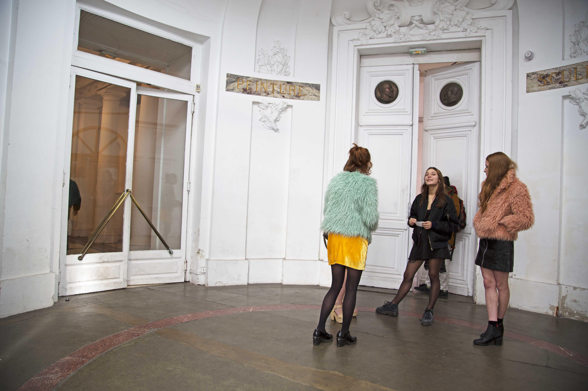
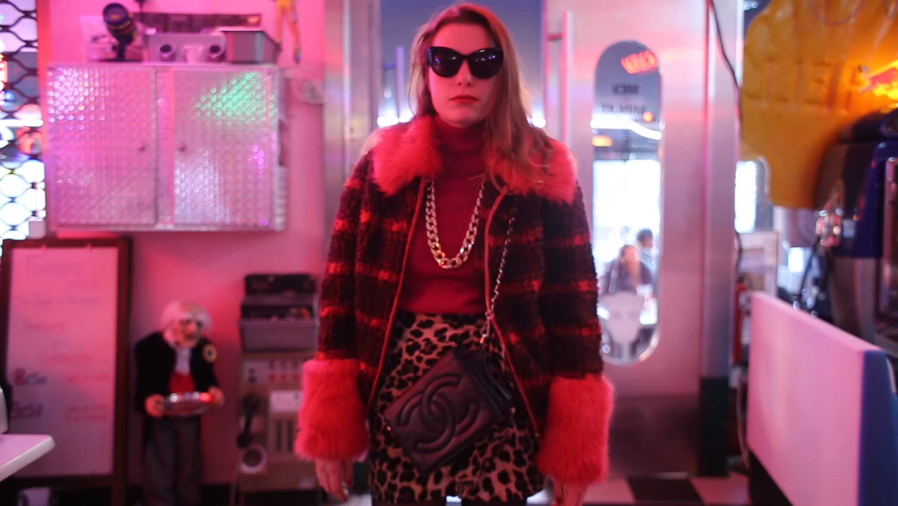
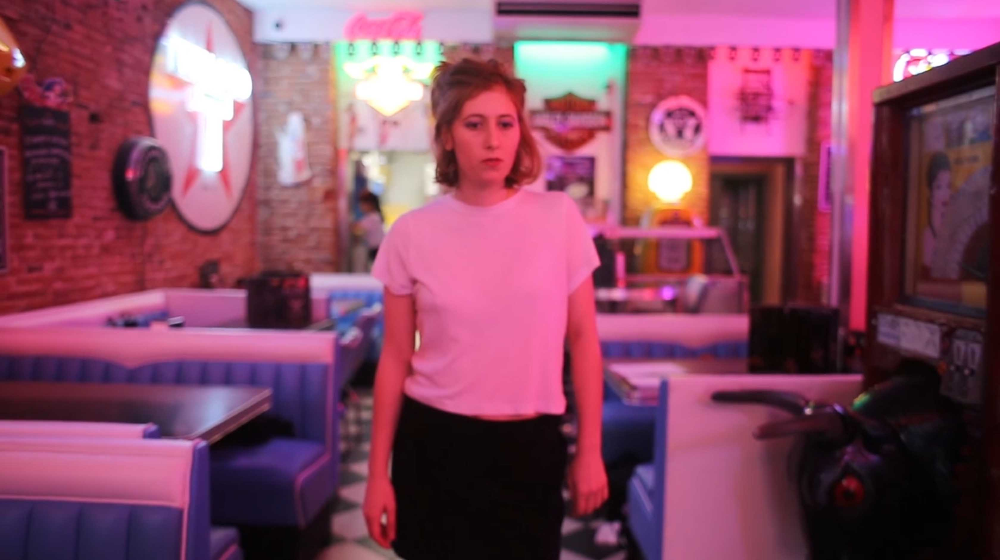
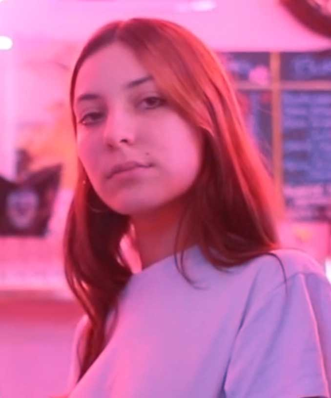
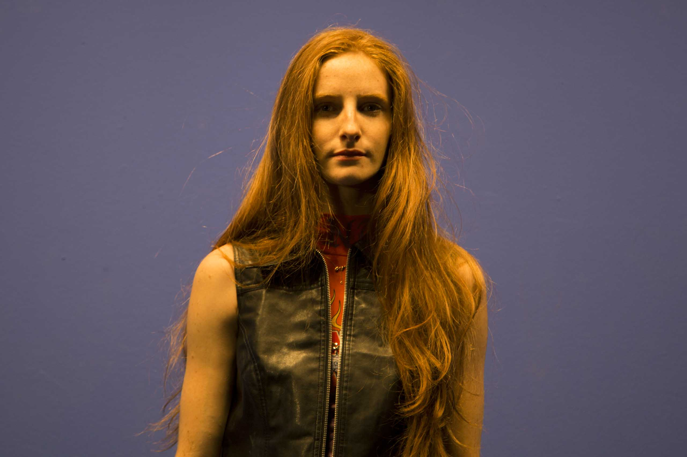
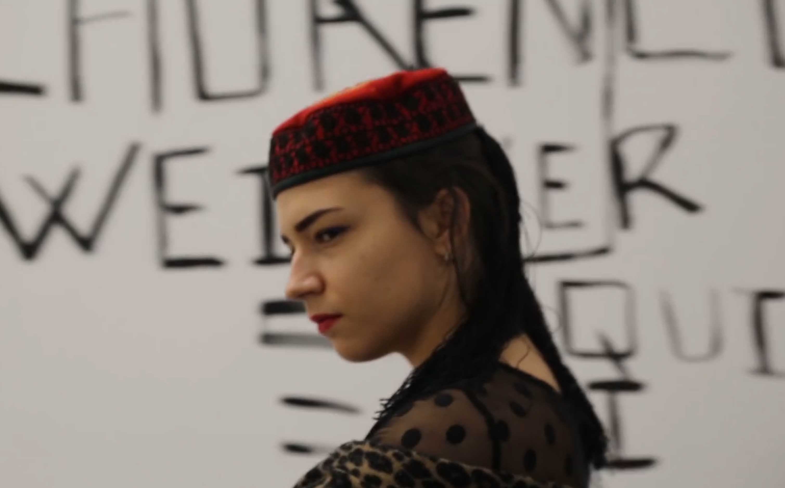
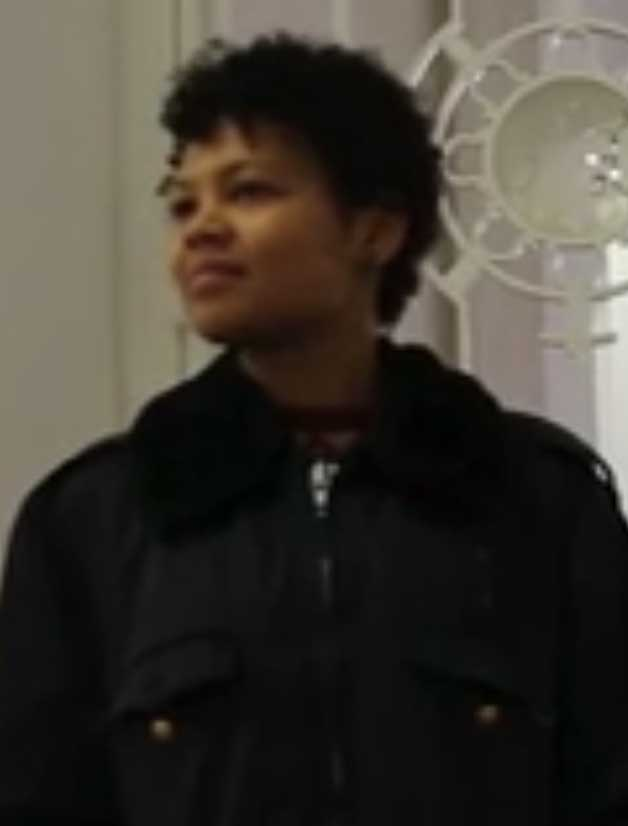
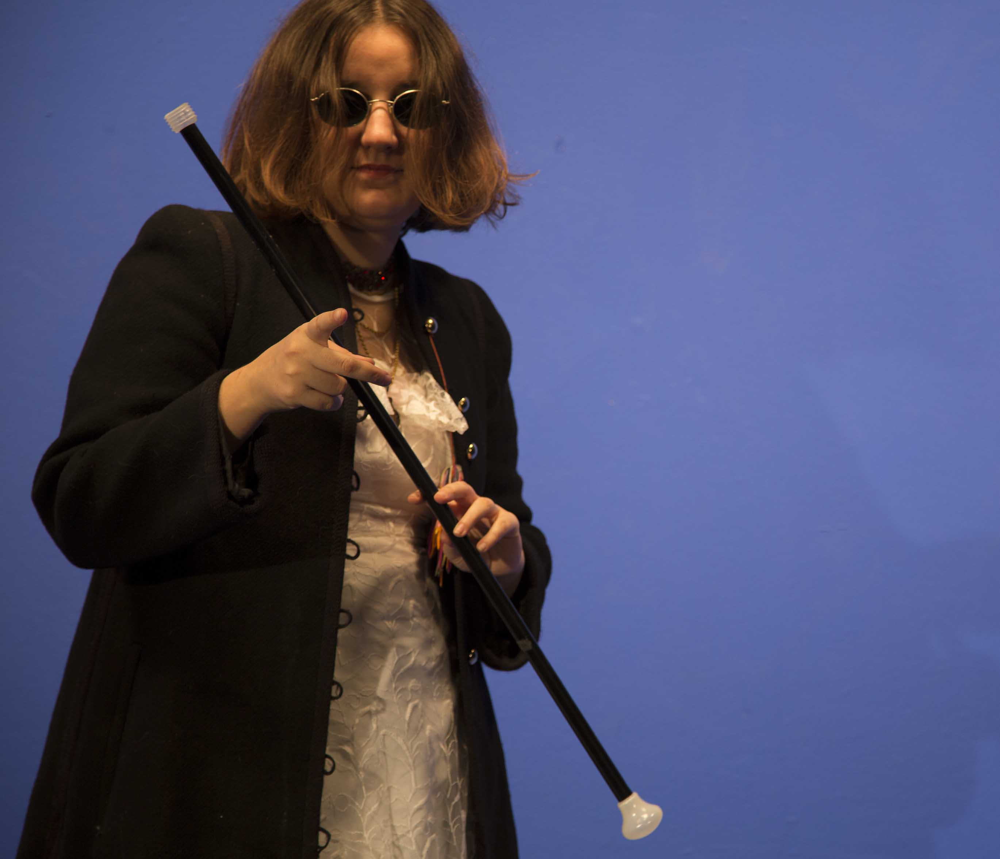
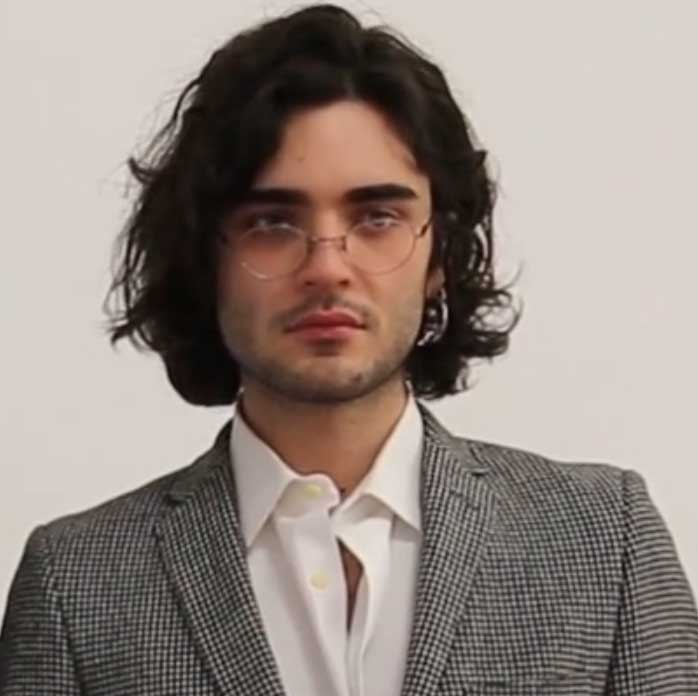
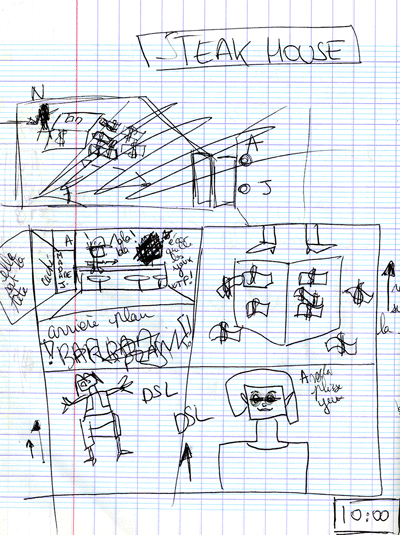

In an unexpected journey, two mercenaries decide to change their lives by stealing works of art.


NADIA MAZZEGA
NISHKA NOVO
24ans
Ukrainienne
Bourgeoise
Cartel : LAUPNAES
(Hautaine vipère)

MANU POZZO
ANGELINA ARRIETA (RUBIS) SAPHIR
24ans
Canadienne
Ancienne Serveuse Steak House
Cartel : AFIREHS
(Bitch à carrière)

LAUREN SIE
MARTHA
20ans
Italienne
Ex-Fiancée de Dayana Love
Serveuse au Steak House
Travaille pour Angelina
(Tigresse en deuil)

MATHILDE CARTOUX
KATE
18ans
Américaine
Serveuse au Steak House
Travaille pour Angelina
(Provocatrice Mode)

DIANE REA
MADAME JACKSON
26ans
Française
Patronne du Steak House
(Espionne civile et sur les nerfs)

SYLVIANE RIVOIRE
EL EMBALE
25ans
Sibériene
Sécurité & Héroïne cachée
(<3 sur la main)

ELEONORE VERGER
MISS POESIE
24ans
Islandaise
Maitresse d’exposition
Adore Laurence Weiner
(Aveugle, regard jaugeur, lèvre pincée, la mine inquisitrice)

POL IZITY
XAVIER LECOMPTE
24ans
Français
Mécène
(Chic & majordome & agent secret du gouvernement)



I create a fake exhibition for this episode.
I maked its paintings in order to copy litteraly Pollock and Lawrence Weiner.
For make an other, the 3rd who mixed the style of both of its artists.
I'm dealing here with the question of:
belonging, of copying, of open source, of making from another work a new creation.
I approach the subject with laughter. The main characters in the short film can't do anything to prevent it.
It's happening right in front of their eyes and yet they can't do anything.

Final Act, acrylic and gouache on canvas, 180 x 180 cm

Laurence Weiner, acrylic and gouache on canvas, 180 x 180 cm

Laupnes Afirens, acrylic and gouache on canvas, 180 x 180 cm